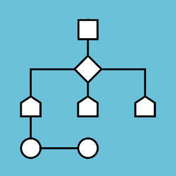

El Blog Personal de Jharold
Est. Jharold J. Arango Huancahurai
Redes Sociales
Mi nombre es Jharold, soy estudiante del instituto cibertec en la carreda de desarroll de softwere
DISPONIBILIDAD HORARIA
| TURNO | LUNES | MARTES | MIERCOLES | JUEVES | VIERNES |
| MAÑANA | LIBRE | LIBRE | LIBRE | LIBRE | OCUPADO |
| TARDE | OCUPADO | OCUPADO | OCUPADO | LIBRE | LIBRE |
| NOCHE | LIBRE | LIBRE | OCUPADO | LIBRE | LIBRE |
Cursos por llevar
| Desarrollo web | Inteligencia Artifial | Algoritmo Java |
 | ||
El desarrollo web es el proceso de crear y mantener sitios web o aplicaciones web |
Es la disciplina de la informática que busca crear sistemas capaces de realizar tareas que normalmente requieren inteligencia humana |
Un algoritmo es un conjunto de instrucciones o pasos ordenados que permiten resolver un problema específico o realizar una tarea determinada |